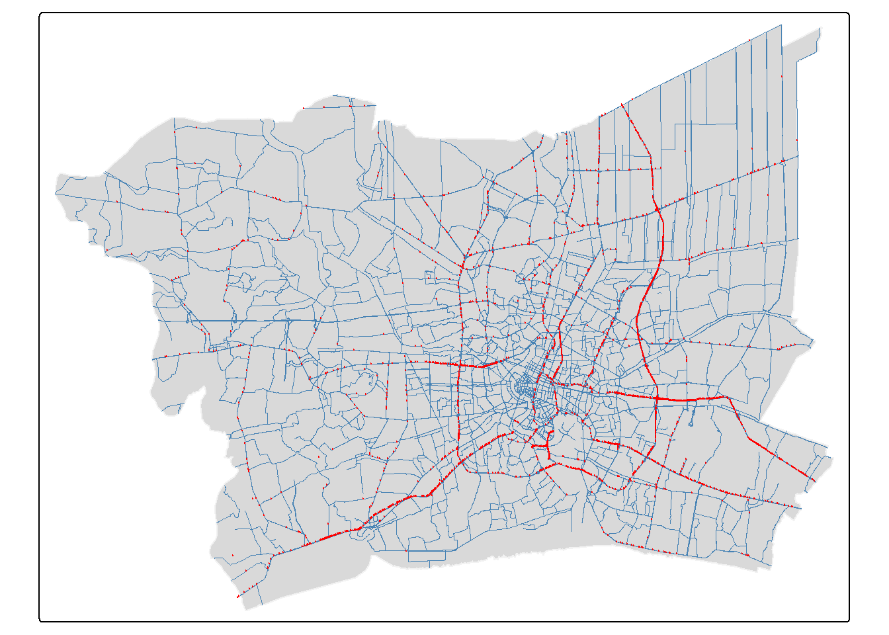
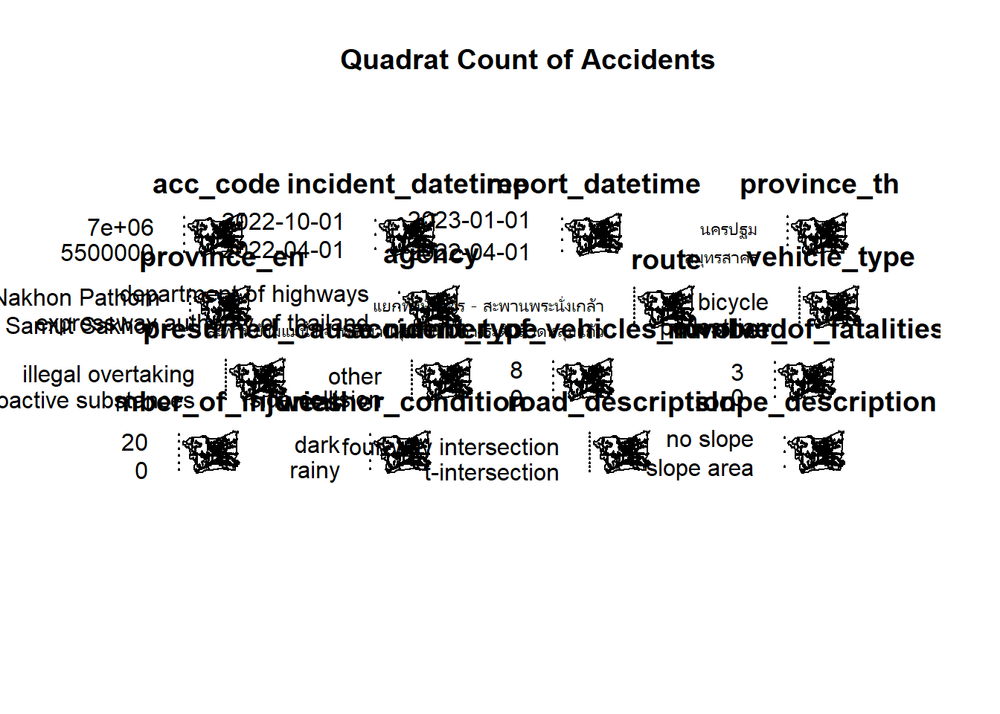
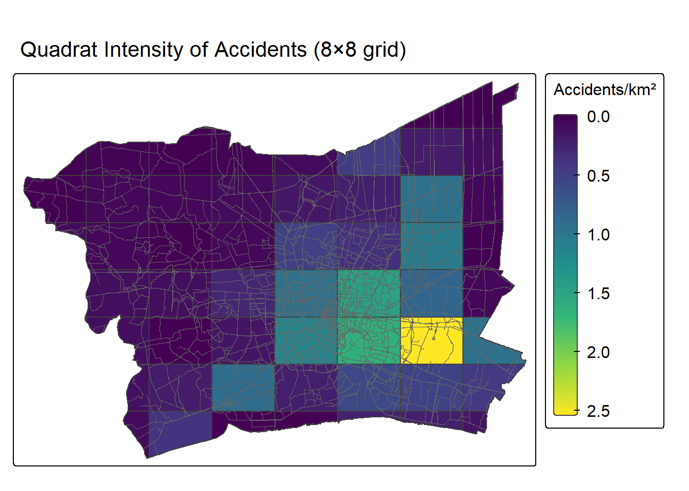
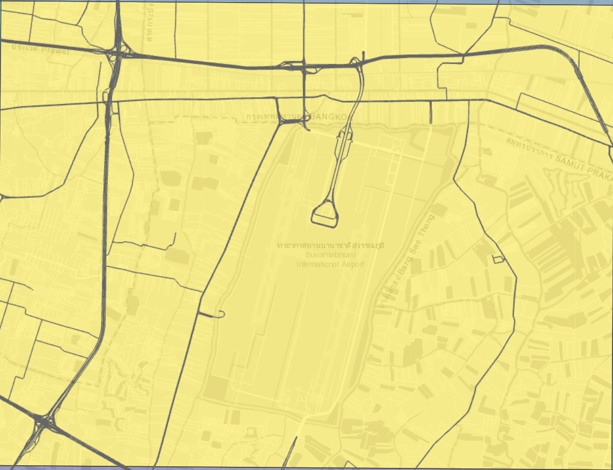
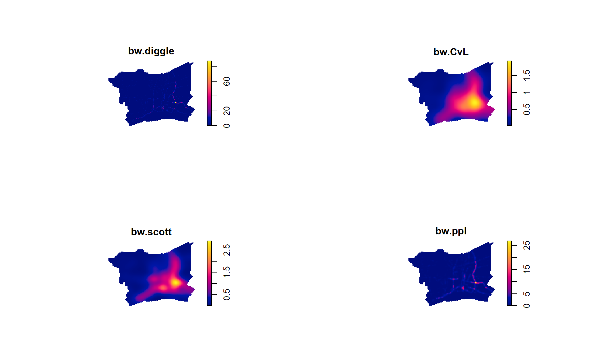

pacman::p_load(sf, terra, spatstat, spNetwork, tmap, tidyverse, dplyr, units, lubridate)01: Study on Road Accidents in Bangkok Greater Metropolitan Area
1. Introduction and Study Context
Road traffic accidents are among the most persistent and spatially patterned public-safety problems facing rapidly urbanising and urbanised regions. Unlike many other point-based public-safety events, traffic accidents are constrained to occur on the road network rather than freely across the two-dimensional landscape . This structural feature of the data has direct consequences for which analytical methods are valid.
This report investigates the spatial distribution of road traffic accidents recorded in 2022 across the Bangkok Metropolitan Region (BMR), comprising Bangkok, Nonthaburi, Nakhon Pathom, Pathum Thani, Samut Prakan and Samut Sakhon. First-order and second-order spatial point pattern analysis (SPPA), with a network-constrained treatment justified by the road-bound nature of the event will be used.
2. Research Questions and Objectives
Primary research questions:
Do road traffic accidents in the BMR occur with uniform intensity across space, or are they concentrated in identifiable areas (first-order property)?
Do accidents exhibit evidence of spatial interaction, i.e., clustering, inhibition or approximate randomness, relative to an appropriate network-constrained null model (second-order property)?
Objectives:
- Prepare and integrate real-world geospatial data for point-pattern analysis.
- Investigate first-order properties of the accident point pattern across space.
- Investigate second-order properties using both planar and network-constrained methods.
- Critically evaluate the assumptions, methodological choices and limitations of the methods used.
- Communicate findings through appropriate geovisualisation.
- Translate findings into public-safety planning implications.
3. Data and Scope of Study
3.1 Datasets
| # | Dataset | Geometry | Role | Source |
|---|---|---|---|---|
| 1 | geoBoundaries-THA-ADM1-all.shp |
Multi-polygon | Define the BMR study region (six provinces) | Thailand ADM1 Geoboundaries |
| 2 | thai_road_accident_2019_2022.csv |
Point (event) | Provides 2022 traffic accidents | Thailand Road Accident 2019 to 2022 |
| 3 | gis_osm_roads_free_1.shp |
Line | Provides road networks (main roads) | OpenStreetMap for Thailand |
3.2 Point Event Definition
A point event in this study is a single recorded road traffic accident occurring in 2022 within the BMR, represented by its reported latitude/longitude. The source data records one row per accident and includes information on the type of vehicle, accident details and casualties.
3.3 Data-Quality Handling Applied to Point Events:
To prepare the data sets for analysis, the following data-quality handling was applied for the traffic accident point event data set thai_road_accident_2019_2022.csv:
Filtering out point events within boundary and temporal points in 2022: (see section 4.3.2) Based on the province names under
province_enandincident_datetime, observations outside the study area and temporal period are filtered out.Missing values: (see section 4.3.4) There are 189 records that are missing latitude and longitude data in the data set, which were filtered out.
Erroneous values: (see section 4.3.4) Under the field
number_of_vehicles_involved, there were five records indicating zero vehicles were involved in the traffic accident. The details were explored and these appeared to be data entry errors as the accident descriptions mentioned collisions. These five records were treated as data entry errors but retained, considering there woould not be any analysis involving number of vehicles.Duplicate observations: (see section 4.3.4) Using the values in
acc_codewhich provided a unique ID for each traffic accident, the distinct() function was used to check and remove any duplicate event point. There was no duplicate event point identified.Invalid coordinates or geometries: (see section 4.4) Four event points that were misaligned or located outside the study area were dropped by subsetting the ppp point object against the owin object.
Overlapping observations: (see section 4.4) Even after removing duplicate observations, there might be point events of different traffic accidents that overlap. Using rjitter(), these point events would be moved by one meter.
3.4 Spatial Study Window
The spatial study window was made up of six BMR provinces (Bangkok, Nonthaburi, Nakhon Pathom, Pathum Thani, Samut Prakan, Samut Sakhon), dissolved into a single polygon. This boundary was used as the owin for planar spatstat analysis and the clipping extent for the road network and traffic accident point events.
4. Data Preparation
4.1 Geographical Boundary of BMR
4.1.1 Importing geographical boundary data
Prior to preparing the geospatial analytical workspace, it is important to check the details of the dataset. This would aid in the extraction of the provinces in BMR into a shapefile bmr.
st_transform(crs = 32647) reprojects the data into WGS 84 / UTM Zone 47N (Klokan Technologies GmbH (https://www.klokantech.com/), n.d.).
adm1 <- st_read("data/geospatial/geoBoundaries-THA-ADM1-all/geoBoundaries-THA-ADM1.shp") %>%
st_transform(crs = 32647)Reading layer `geoBoundaries-THA-ADM1' from data source
`C:\kayc134\ISSS626_kayc\Take-Home_Ex\Take-Home_Ex01\data\geospatial\geoBoundaries-THA-ADM1-all\geoBoundaries-THA-ADM1.shp'
using driver `ESRI Shapefile'
Simple feature collection with 77 features and 5 fields
Geometry type: MULTIPOLYGON
Dimension: XY
Bounding box: xmin: 97.34381 ymin: 5.612851 xmax: 105.6368 ymax: 20.46483
Geodetic CRS: WGS 84str(adm1)Classes 'sf' and 'data.frame': 77 obs. of 6 variables:
$ shapeName : chr "Roi Et Province" "Phayao Province" "Nakhon Sawan Province" "Nong Bua Lam Phu Province" ...
$ shapeISO : chr "TH-45" "TH-56" "TH-60" "TH-39" ...
$ shapeID : chr "36821470B96343765829948" "36821470B12194119812739" "36821470B58837026258254" "36821470B48254980905782" ...
$ shapeGroup: chr "THA" "THA" "THA" "THA" ...
$ shapeType : chr "ADM1" "ADM1" "ADM1" "ADM1" ...
$ geometry :sfc_MULTIPOLYGON of length 77; first list element: List of 1
..$ :List of 1
.. ..$ : num [1:1813, 1:2] 982599 983630 984362 984941 985133 ...
..- attr(*, "class")= chr [1:3] "XY" "MULTIPOLYGON" "sfg"
- attr(*, "sf_column")= chr "geometry"
- attr(*, "agr")= Factor w/ 3 levels "constant","aggregate",..: NA NA NA NA NA
..- attr(*, "names")= chr [1:5] "shapeName" "shapeISO" "shapeID" "shapeGroup" ...adm1[["shapeName"]] [1] "Roi Et Province" "Phayao Province"
[3] "Nakhon Sawan Province" "Nong Bua Lam Phu Province"
[5] "Chachoengsao Province" "Surin Province"
[7] "Nakhon Ratchasima Province" "Sukhothai Province"
[9] "Phetchaburi Province" "Chaiyaphum Province"
[11] "Phetchabun Province" "Surat Thani Province"
[13] "Si Sa Ket Province" "Nong Khai Province"
[15] "Bangkok" "Khon Kaen Province"
[17] "Loei Province" "Saraburi Province"
[19] "Uthai Thani Province" "Chumphon Province"
[21] "Kalasin" "Phitsanulok Province"
[23] "Ranong Province" "Udon Thani Province"
[25] "Sakon Nakhon Province" "Chiang Rai Province"
[27] "Tak Province" "Nakhon Pathom Province"
[29] "Lamphun Province" "Trat Province"
[31] "Ratchaburi Province" "Yasothon Province"
[33] "Phrae Province" "Yala Province"
[35] "Uttaradit Province" "Buri Ram Province"
[37] "Kamphaeng Phet Province" "Lampang Province"
[39] "Nonthaburi Province" "Bueng Kan Province"
[41] "Narathiwat Province" "Ubon Ratchathani Province"
[43] "Prachuap Khiri Khan Province" "Songkhla Province"
[45] "Phuket Province" "Ang Thong Province"
[47] "Maha Sarakham Province" "Trang Province"
[49] "Suphan Buri Province" "Sing Buri Province"
[51] "Samut Songkhram Province" "Rayong Province"
[53] "Prachin Buri Province" "Phra Nakhon Si Ayutthaya Province"
[55] "Phichit Province" "Phatthalung Province"
[57] "Phangnga Province" "Pattani Province"
[59] "Pathum Thani Province" "Nakhon Si Thammarat Province"
[61] "Nakhon Nayok Province" "Mukdahan Province"
[63] "Lopburi Province" "Krabi Province"
[65] "Chon Buri Province" "Chiang Mai Province"
[67] "Chai Nat Province" "Amnat Charoen Province"
[69] "Samut Sakhon Province" "Samut Prakan Province"
[71] "Nan Province" "Chanthaburi Province"
[73] "Nakhon Phanom Province" "Kanchanaburi Province"
[75] "Mae Hong Son Province" "Sa Kaeo Province"
[77] "Satun Province" 4.1.2 Filtering to BMR boundary
By obtaining the values in the province field, the BMR provinces could be filtered to derive the data set bmr.
bmr_provinces <- c(
"Bangkok",
"Nonthaburi Province",
"Pathum Thani Province",
"Samut Prakan Province",
"Nakhon Pathom Province",
"Samut Sakhon Province"
)
bmr <- adm1 %>%
filter(shapeName %in% bmr_provinces) %>%
st_make_valid() %>%
st_union() %>%
st_as_sf(crs = st_crs(adm1)) %>%
mutate(name = "Bangkok Greater Metropolitan Area")4.2 Road Networks in BMR
4.2.1 Importing road network data
Similarly, the road networks data set was checked in order to correctly filter the required data. For the purpose of this analysis, we used only main roads.
roads_raw <- st_read("data/geospatial/thailand-260911-free.shp/gis_osm_roads_free_1.shp")%>%
st_transform(crs = 32647)Reading layer `gis_osm_roads_free_1' from data source
`C:\kayc134\ISSS626_kayc\Take-Home_Ex\Take-Home_Ex01\data\geospatial\thailand-260911-free.shp\gis_osm_roads_free_1.shp'
using driver `ESRI Shapefile'
Simple feature collection with 2928674 features and 10 fields
Geometry type: LINESTRING
Dimension: XY
Bounding box: xmin: 97.31354 ymin: 5.643645 xmax: 105.6481 ymax: 20.47168
Geodetic CRS: WGS 84str(roads_raw)Classes 'sf' and 'data.frame': 2928674 obs. of 11 variables:
$ osm_id : chr "4270622" "4828442" "4828443" "4828444" ...
$ code : int 5122 5122 5122 5122 5122 5122 5122 5122 5122 5153 ...
$ fclass : chr "residential" "residential" "residential" "residential" ...
$ name : chr "ถนนศิริมังคลาจารย์ ซอย1" "Soi Ruam- U-Thit" "Soi Ruam- U-Thit" NA ...
$ ref : chr NA NA NA NA ...
$ oneway : chr "B" "B" "B" "B" ...
$ maxspeed: int 0 0 0 0 0 30 30 0 0 0 ...
$ layer : num 0 0 0 0 0 0 0 0 0 0 ...
$ bridge : chr "F" "F" "F" "F" ...
$ tunnel : chr "F" "F" "F" "F" ...
$ geometry:sfc_LINESTRING of length 2928674; first list element: 'XY' num [1:6, 1:2] 497127 497078 497058 496981 496928 ...
- attr(*, "sf_column")= chr "geometry"
- attr(*, "agr")= Factor w/ 3 levels "constant","aggregate",..: NA NA NA NA NA NA NA NA NA NA
..- attr(*, "names")= chr [1:10] "osm_id" "code" "fclass" "name" ...sort(unique(roads_raw$fclass)) [1] "bridleway" "busway" "cycleway" "footway"
[5] "living_street" "motorway" "motorway_link" "path"
[9] "pedestrian" "primary" "primary_link" "residential"
[13] "secondary" "secondary_link" "service" "steps"
[17] "tertiary" "tertiary_link" "track" "track_grade1"
[21] "track_grade2" "track_grade3" "track_grade4" "track_grade5"
[25] "trunk" "trunk_link" "unclassified" "unknown" 4.2.2 Filtering to main road classes
Based on the values in fclass, main roads (Kaart: Road Classifications Guide - OpenStreetMap Wiki, n.d.) were filtered out.
main_road_classes <- c(
"motorway",
"motorway_link",
"trunk",
"trunk_link",
"primary",
"primary_link",
"secondary",
"secondary_link",
"tertiary",
"tertiary_link"
)
roads_select <- roads_raw %>%
filter(fclass %in% main_road_classes)4.2.3 Filtering road networks to BMR boundary
The road networks was filtered to the BMR boundary using st_crop() based on the boundary defined in bmr.
roads_bmr <- roads_select %>%
st_crop(bmr) %>%
st_intersection(bmr) The boundary and road networks were plotted for a visual check.
tm_shape(bmr) + tm_polygons(col = "grey95") +
tm_shape(roads_bmr) + tm_lines(col = "steelblue", lwd = 0.5)
4.3 2022 Traffic Accidents in BMR
4.3.1 Importing traffic accident data set
The traffic accident data was imported using read_csv(). As the study is confined to 2022 event points, the columns were checked to facilitate the filtering.
accident_full <- read_csv("data/aspatial/thai_road_accident_2019_2022.csv")head(accident_full)# A tibble: 6 × 18
acc_code incident_datetime report_datetime province_th province_en
<dbl> <dttm> <dttm> <chr> <chr>
1 571905 2019-01-01 00:00:00 2019-01-02 06:11:00 ลพบุรี Loburi
2 3790870 2019-01-01 00:03:00 2020-02-20 13:48:00 อุบลราชธานี Ubon Ratchathani
3 599075 2019-01-01 00:05:00 2019-01-01 10:35:00 ประจวบคีรีขันธ์ Prachuap Khiri K…
4 571924 2019-01-01 00:20:00 2019-01-02 05:12:00 เชียงใหม่ Chiang Mai
5 599523 2019-01-01 00:25:00 2019-01-04 09:42:00 นครสวรรค์ Nakhon Sawan
6 571982 2019-01-01 00:30:00 2019-01-07 12:46:00 แม่ฮ่องสอน Mae Hong Son
# ℹ 13 more variables: agency <chr>, route <chr>, vehicle_type <chr>,
# presumed_cause <chr>, accident_type <chr>,
# number_of_vehicles_involved <dbl>, number_of_fatalities <dbl>,
# number_of_injuries <dbl>, weather_condition <chr>, latitude <dbl>,
# longitude <dbl>, road_description <chr>, slope_description <chr>4.3.2 Filtering accident event points to 2022 and BMR boundary
After checking the columns and content, the required data for 2022 in BMR was filtered out as accident_2022.
bmr_province_names <- c(
"Bangkok",
"Nonthaburi",
"Pathum Thani",
"Samut Prakan",
"Nakhon Pathom",
"Samut Sakhon"
)
accident_2022 <- accident_full %>%
filter(
year(incident_datetime) == 2022,
province_en %in% bmr_province_names
)4.3.4 Data handling for point events
Missing Values
summary() was used to check for missing values. It was observed that there were 189 “NA” values in latitude and longtitude. These rows were dropped. Interestingly, there were accident records that had zero vehicles involved in the field number_of_vehicles_involved.
summary(accident_2022) acc_code incident_datetime report_datetime
Min. :5484851 Min. :2022-01-01 01:00:00 Min. :2022-01-02 02:43:00
1st Qu.:6445924 1st Qu.:2022-04-14 20:00:00 1st Qu.:2022-06-10 14:05:30
Median :6930875 Median :2022-07-26 09:30:00 Median :2022-09-16 10:51:00
Mean :6891240 Mean :2022-07-16 15:21:15 Mean :2022-09-07 02:18:10
3rd Qu.:7513754 3rd Qu.:2022-10-19 08:43:45 3rd Qu.:2022-12-28 06:10:15
Max. :7570954 Max. :2022-12-31 23:11:00 Max. :2023-01-26 09:49:00
province_th province_en agency route
Length :3782 Length :3782 Length :3782 Length :3782
N.unique : 6 N.unique : 6 N.unique : 3 N.unique : 174
N.blank : 0 N.blank : 0 N.blank : 0 N.blank : 0
Min.nchar: 6 Min.nchar: 7 Min.nchar: 22 Min.nchar: 7
Max.nchar: 13 Max.nchar: 13 Max.nchar: 32 Max.nchar: 78
vehicle_type presumed_cause accident_type number_of_vehicles_involved
Length :3782 Length :3782 Length :3782 Min. : 0.00
N.unique : 12 N.unique : 30 N.unique : 9 1st Qu.: 1.00
N.blank : 0 N.blank : 0 N.blank : 0 Median : 2.00
Min.nchar: 3 Min.nchar: 5 Min.nchar: 5 Mean : 1.93
Max.nchar: 24 Max.nchar: 46 Max.nchar: 44 3rd Qu.: 2.00
Max. :10.00
number_of_fatalities number_of_injuries weather_condition latitude
Min. :0.00000 Min. : 0.0000 Length :3782 Min. :13.45
1st Qu.:0.00000 1st Qu.: 0.0000 N.unique : 5 1st Qu.:13.66
Median :0.00000 Median : 0.0000 N.blank : 0 Median :13.73
Mean :0.04707 Mean : 0.5714 Min.nchar: 4 Mean :13.76
3rd Qu.:0.00000 3rd Qu.: 1.0000 Max.nchar: 5 3rd Qu.:13.84
Max. :4.00000 Max. :27.0000 Max. :14.25
NAs :189
longitude road_description slope_description
Min. : 99.88 Length :3782 Length :3782
1st Qu.:100.45 N.unique : 13 N.unique : 3
Median :100.62 N.blank : 0 N.blank : 0
Mean :100.58 Min.nchar: 5 Min.nchar: 5
3rd Qu.:100.71 Max.nchar: 36 Max.nchar: 10
Max. :100.94
NAs :189 Using View(), five records with zero vehicles involved were explored and these appeared to be data entry errors as the accident descriptions mentioned collisions. These five records were treated as data entry errors but retained, considering there would not be any analysis involving number of vehicles.
accident_2022 %>%
filter(number_of_vehicles_involved == 0) %>%
View()Duplicate point events were checked for using the values in acc_code, which should be distinct for each traffic accident. There was no duplicate event identified.
nrow(accident_2022)[1] 3782accident_dup <- accident_2022 %>%
distinct(acc_code, .keep_all = TRUE)
nrow(accident_dup)[1] 3782The data set was transformed into an sf data set, while filtering out the 189 records that had missing latitude and longitude values.
accident_sf <- accident_2022 %>%
filter(!is.na(latitude), !is.na(longitude)) %>%
distinct(longitude, latitude, .keep_all = TRUE) %>%
st_as_sf(coords = c("longitude", "latitude"), crs = 4326) %>%
st_transform(crs = 32647)The three data sets were plotted together for a visual check.
tm_shape(bmr) + tm_polygons(col = "grey95") +
tm_shape(roads_bmr) + tm_lines(col = "steelblue", lwd = 0.5) +
tm_shape(accident_sf) + tm_dots(fill = "red", col = "red", size = 0.02)
An interactive map would allow for a more detailed exploration to ensure that event points fall neatly within the road networks.
NoteNote
The interactive map block is set to eval: FALSE to minimise computational overhead and reduce report rendering time.
tmap_mode("view")
tm_shape(bmr) + tm_polygons(col = "grey95", fill_alpha = 0.5) +
tm_shape(roads_bmr) + tm_lines(col = "steelblue", lwd = 0.5) +
tm_shape(accident_sf) + tm_dots(fill = "red", col = "red", size = 0.2)tmap_mode("plot")4.4 Conversion to owin and ppp
The sf data set was converted to owin and ppp, which were required for SPPA. A check on the number of event points from accident_sf using nrow() was for comparison with event points after owin clipping.
nrow(accident_sf)[1] 3272After owin clipping, there was a drop in four event points, from 3,272 to 3,268. This was a result of the accident event points outside the bmr boundary, even though they were labelled as BMR province in the data set. This handled the point events that fell outside the boundary.
rjitter() from spadstat package was also used for point events of different traffic accidents that happened to overlap by moving them by 1 meter. Unlike st_jitter, the argument retry = TRUE in rjitter() addressed the possibility of a point event accidentally colliding with another after jittering. Based on the output, there was no point event that overlapped.
bmr_owin <- as.owin(bmr)
accident_ppp <- as.ppp(accident_sf)
accident_ppp_bmr <- accident_ppp[bmr_owin]
cat("Overlap points detected:", sum(duplicated(accident_ppp_bmr)), "\n")Overlap points detected: 0 if (any(duplicated(accident_ppp_bmr))) {
accident_ppp_bmr <- rjitter(
accident_ppp_bmr,
retry = TRUE,
nsim = 1,
drop = TRUE
)
cat("Overlap points remaining after jittering:", sum(duplicated(accident_ppp_bmr)), "\n")
}
accident_ppp_bmrMarked planar point pattern: 3268 points
Mark variables:
acc_code incident_datetime report_datetime province_th province_en agency
route vehicle_type presumed_cause accident_type number_of_vehicles_involved
number_of_fatalities number_of_injuries weather_condition road_description
slope_description
window: polygonal boundary
enclosing rectangle: [587130.4, 712441.7] x [1484748.9, 1579087.2] unitsrescale.ppp() was used to re-scaled to kilometers to make the statistical output more interpretable. This is particularly relevant for accident events, as using meters may result in an output of less than one accident.
accident_ppp_km <- rescale.ppp(accident_ppp_bmr, 1000, "km")5. First-Order SPPA
To examine the first-order spatial distribution of road traffic accidents in BMR, a planar Quadrat Analysis is conducted as a primary exploratory step. A network-based quadrat method segments the road network in order to aggregate point events along it (Shiode, 2008). However, it appears to be appropriate only for a smaller geometry boundary. Using the quadratcount() from spadstat.linnet package on the BMR road network resulted in about 250,000 line segments, which was computationally challenging to run as no output was produced even after more than 10 minutes (Baddeley et al., n.d.). Instead, a planar quadrat analysis was conducted to evaluate spatial variation and test for Complete Spatial Randomness (CSR) using a Chi-square goodness-of-fit test.
Complementing this, Network Kernel Density Estimation (NKDE) is applied. Traffic accidents are constrained to linear transport infrastructure rather than freely distributed across 2D space. NKDE adapts conventional density estimation by calculating accident intensity along network segments using shortest-path network distances rather than Euclidean distances (Okabe et al., 2009). Combining network-adjusted quadrat partitioning with NKDE prevents false density artifacts in planar spaces, offering a realistic representation of traffic accident risk along BMR’s road networks.
5.1 Quadrat Analysis
To detect non-random accident clustering across a road network, quadrat analysis divides the study area into a regular grid and compares observed cell counts against a Poisson distribution CSR using Chi-square.
5.1.1 Chi-square quadrat test
The quadratcount() from spadstat package was used to divid the study area into an 8 x 8 grid and count the number of accident point events in each cell.
qcount <- quadratcount(accident_ppp_km, nx = 8, ny = 8)
plot(accident_ppp_km, pch = 20, cex = 0.3, main = "Quadrat Count of Accidents")
plot(qcount, add = TRUE, cex = 0.8, col = "red")
qcount_intensity <- intensity(qcount)quadrat.test(accident_ppp_km, nx = 8, ny = 8)
Chi-squared test of CSR using quadrat counts
data: accident_ppp_km
X2 = 5119.7, df = 58, p-value < 2.2e-16
alternative hypothesis: two.sided
Quadrats: 59 tiles (irregular windows)With a p-value of < 0.05 from the chi-square quadrat test, the null hypothesis of CSR is rejected. This indicates that traffic accidents are not uniformly distributed across the BMR under a planar model, which is expected given that accidents are confined to a road network.
5.1.2 Plotting Accident Intensity
An 8×8 rectangular grid was generated over the BMR boundary and clipped to its irregular extent using st_intersection(), so quadrats along the study area’s edge reflect their true partial area. Accident counts per quadrat were obtained using st_intersects(), and intensity was calculated as accident count divided by each quadrat’s clipped area in km².
NoteAI Use Disclosure
Generative AI was used to draft the R code for constructing the 8 × 8 quadrat grid over the BMR boundary and calculating accident intensity (accidents per km²) per quadrat. The output was reviewed and run by the author to verify correctness against the study data.
accident_bmr <- accident_sf %>%
st_filter(bmr, .predicate = st_within)
grid_bmr <- st_make_grid(bmr, n = c(8, 8)) %>%
st_sf(quadrat_id = seq_along(.), geometry = .) %>%
st_intersection(bmr)
grid_bmr <- grid_bmr %>%
mutate(
accident_count = lengths(st_intersects(., accident_bmr)),
area_km2 = as.numeric(st_area(.)) / 1e6,
intensity = accident_count / area_km2
)
tmap_mode("plot")
tm_shape(grid_bmr) +
tm_polygons(
fill = "intensity",
fill.scale = tm_scale_continuous(values = "viridis"),
fill.legend = tm_legend(title = "Accidents/km²",
text.size = 1,
width = 6)) +
tm_shape(roads_bmr) + tm_lines(col = "grey40", lwd = 0.2) +
tm_title("Quadrat Intensity of Accidents (8×8 grid)") +
tm_layout(legend.title.size = 1)
Quadrat intensity was plotted based on the 8 x 8 grid for visual inspection. There was a clear gradiant concentration in the bottom right, which seems to coincide with the Bangkok province, peaking at 2.5 accidents/km² as represented by the yellow cell. The yellow cell however, appeared to have a higher than normal proportion of accidents considering that it did not have a very dense road network, as compared to the green cells.
An interactive map was plotted to check the infrastructures in the yellow cell.
NoteNote
The interactive map block is set to eval: FALSE to minimise computational overhead and reduce report rendering time.
tmap_mode("view")
tm_shape(grid_bmr) +
tm_polygons(
fill = "intensity",
fill_alpha = 0.5,
fill.scale = tm_scale_continuous(values = "viridis"),
fill.legend = tm_legend(title = "Accidents/km²",
text.size = 1,
width = 6)) +
tm_shape(roads_bmr) + tm_lines(col = "grey40", lwd = 0.2) +
tm_title("Quadrat Intensity of Accidents (8×8 grid)") +
tm_layout(legend.title.size = 1)tmap_mode("plot")
From the interactive map, the Suvarnabhumi Airport could be seen in the yellow cell. This suggested that there was high traffic concentration despite the relatively shorter road length.
To verify the visual observation, road segments were clipped to each quadrat using st_intersection() and their lengths measured using st_length(). group_by() and summarise(sum()) were then used to compute total road length per cell. Dividing accident count by road length would show how many accidents occur per kilometre of road, so cells with elevated risk could be told apart from cells that simply have a denser road network.
NoteAI Use Disclosure
Generative AI was used to draft the R code for for clipping road segments to each quadrat and summing road length per cell. The output was reviewed and run by the author to verify correctness against the study data.
road_lengths_by_quadrat <- roads_bmr %>%
st_intersection(grid_bmr) %>%
mutate(seg_length_km = as.numeric(st_length(.)) / 1000) %>%
st_drop_geometry() %>%
group_by(quadrat_id) %>%
summarise(road_length_km = sum(seg_length_km), .groups = "drop")
grid_bmr <- grid_bmr %>%
select(-any_of(c("road_length_km", "accidents_per_km_road"))) %>%
left_join(road_lengths_by_quadrat, by = "quadrat_id") %>%
mutate(
road_length_km = replace_na(road_length_km, 0),
accidents_per_km_road = accident_count / road_length_km
)
grid_bmr %>%
st_drop_geometry() %>%
arrange(desc(intensity)) %>%
select(quadrat_id, accident_count, area_km2, intensity, road_length_km, accidents_per_km_road) %>%
head(10) quadrat_id accident_count area_km2 intensity road_length_km
1 23 470 184.7132 2.5444848 378.4973
2 22 299 184.7132 1.6187254 639.8052
3 30 272 184.7132 1.4725529 794.4529
4 21 214 184.7132 1.1585527 660.7764
5 39 197 184.7132 1.0665181 276.2152
6 24 102 105.7808 0.9642585 128.8788
7 29 178 184.7132 0.9636559 772.3341
8 47 178 184.7132 0.9636559 244.5642
9 12 169 184.7132 0.9149318 286.4515
10 31 153 184.7132 0.8283110 331.7613
accidents_per_km_road
1 1.2417526
2 0.4673298
3 0.3423740
4 0.3238615
5 0.7132120
6 0.7914415
7 0.2304702
8 0.7278253
9 0.5899778
10 0.4611750Quadrats were ranked by intensity to identify the top 10 highest-accident-density cells. The table confirms the visual observation that the yellow cell, i.e., quadrat_id 23, has an accident count of 470 for its 378km of roads. It has 1.24 accidents per km of road, compared to the next highest at 0.47.
5.2 Network Kernel Density Estimate (NKDE)
NKDE to estimating the density of such spatial point events, through search bandwidth selection and lixel length
https://www.sciencedirect.com/science/article/abs/pii/S0198971508000318
network quardrat analysis
Kernel density estimation (KDE) is then applied in two forms for the same reason, i.e., a planar KDE surface is retained as an exploratory baseline, while a network-constrained KDE (NKDE) is treated as the primary first-order method, since it estimates intensity along the network itself rather than across the full 2-D plane. This avoids the systematic bias of interpreting uneven road density as uneven accident risk.
5.2.1 Bandwidth selection
The objective of performing KDE is to determine the optimal estimate of the density of the process, as it impacts the data that is being smoothed. A bandwidth that is too small reproduces individual points, resulting in noise rather than a pattern, while too large would smooth away point events into a blob. Thus, bandwidth selection will impact the estimator (McSwiggan & Department of Mathematics and Statistics, UWA, 2019).
The use of density() requires an indicated bandwidth. The bandwidth was calculated using four different methods and plotted for visual inspection.
bw.diggle(accident_ppp_km) sigma
0.0692306 bw.CvL(accident_ppp_km) sigma
7.06346 bw.scott(accident_ppp_km) sigma.x sigma.y
5.256682 4.212977 bw.ppl(accident_ppp_km) sigma
0.7507077 kde_diggle <- density(accident_ppp_km, sigma = bw.diggle, edge = TRUE)
kde_cvl <- density(accident_ppp_km, sigma = bw.CvL, edge = TRUE)
kde_scott <- density(accident_ppp_km, sigma = bw.scott, edge = TRUE)
kde_ppl <- density(accident_ppp_km, sigma = bw.ppl, edge = TRUE)
par(mfrow = c(2, 2))
plot(kde_diggle, main = "bw.diggle")
plot(kde_cvl, main = "bw.CvL")
plot(kde_scott, main = "bw.scott")
plot(kde_ppl, main = "bw.ppl")
Interpretation. Comparing the four bandwidth selectors visually rather than by their sigma values alone reveals a clearer picture. bw.diggle and bw.ppl (0.023 km and 0.75 km respectively) both produce maps that trace the underlying road network, with narrow bright lines following street shapes rather than distinct hotspot regions. This indicates under-smoothing, where the estimate at each location is driven by only the handful of nearest accident points. bw.CvL and bw.scott (7.06 km and 4-5 km) instead collapse the pattern into a single broad, diffuse blob covering a large area. This indicates over-smoothing.
None of the bandwidth selector produces a map suited to identifying discrete, actionable hotspots. This demonstrates that a purely planar kernel density approach struggles to find a bandwidth that meaningfully separates “accident risk” from “road network shape” in data that is inherently constrained to the road network.
bw.ppl is selected as the working bandwidth for the exploratory planar KDE baseline as it is the least extreme under-smoother and the closest to providing some accident point details. The output is treated as a baseline for comparison rather than the primary first-order evidence. This finding directly reinforces the report’s methodological decision to rely on Network KDE (NKDE) as the primary first-order method, since NKDE smooths intensity along the network itself and is therefore not subject to the same trade-off between tracing the road pattern and diffusing it into a blob.
https://api.research-repository.uwa.edu.au/ws/portalfiles/portal/81039500/THESIS_DOCTOR_OF_PHILOSOPHY_MCSWIGGAN_Gregory_Edward_2020.pdf (use of diggle)
5.1.2 Lixel
5.4 Network KDE (NKDE)
roads_bmr <- roads_bmr %>%
st_cast("MULTILINESTRING") %>%
st_cast("LINESTRING")
class(st_geometry(roads_bmr))[1] "sfc_LINESTRING" "sfc" REVIEW BELOW CODE
lixels_bmr <- lixelize_lines(roads_bmr, 200, mindist = 100)
samples_bmr <- lines_center(lixels_bmr)
nkde_bmr <- nkde(
lines = roads_bmr,
events = accident_bmr,
w = rep(1, nrow(accident_bmr)),
samples = samples_bmr,
kernel_name = "quartic",
bw = 500,
div = "bw.ppl",
method = "simple",
digits = 1,
tol = 1,
grid_shape = c(50, 50),
max_depth = 8,
agg = 5,
sparse = TRUE,
verbose = FALSE
)samples_bmr$density <- nkde_bmr
samples_bmr_sf <- st_as_sf(samples_bmr)
tm_shape(bmr) + tm_polygons(col = "grey95") +
tm_shape(samples_bmr_sf) +
tm_dots(
fill = "density",
fill.scale = tm_scale_intervals(style = "quantile", values = "viridis"),
fill.legend = tm_legend(title = "NKDE Density"),
size = 0.05
) +
tm_layout(
main.title = "Network KDE of Accidents — BMR (bw = 500 m)",
main.title.size = 1,
legend.outside = TRUE
)6. Second-Order SPPA
Network Constrained G- and K-Function Analysis
K-means clustering to identify hotspots https://pubmed.ncbi.nlm.nih.gov/19393780/
7. Value-Added Analysis
Moran’s I for spatial pattern of road accidents (second-order) https://www.sciencedirect.com/science/article/abs/pii/S0966692397000379
https://opentransportationjournal.com/VOLUME/20/ELOCATOR/e26671212488767/FULLTEXT/
References
Baddeley, A., Turner, R., & Rubak, E. (n.d.). quadratcount: Quadrat counting for a point pattern on a linear network. Rdocumentation. https://www.rdocumentation.org/packages/spatstat.linnet/versions/3.5-0/topics/quadratcount
Download OpenStreetMap for Thailand | Geofabrik Download Server. (n.d.). Geofabrik Download Server. https://download.geofabrik.de/asia/thailand.html
Kaart: Road Classifications Guide - OpenStreetMap Wiki. (n.d.). https://wiki.openstreetmap.org/wiki/Kaart:_Road_Classifications_Guide
Kam, T. S. R for Geospatial Data Science and Analytics. https://r4gdsa.netlify.app/
Klokan Technologies GmbH (https://www.klokantech.com/). (n.d.). EPSG.io: Coordinate Systems worldwide. https://epsg.io/
McSwiggan, G. & Department of Mathematics and Statistics, UWA. (2019). Spatial point process methods for linear networks with applications to road accident analysis. https://api.research-repository.uwa.edu.au/ws/portalfiles/portal/81039500/THESIS_DOCTOR_OF_PHILOSOPHY_MCSWIGGAN_Gregory_Edward_2020.pdf
Nicholson, A. (1998). Analysis of spatial distributions of accidents. Safety Science, 71–91. https://www.sciencedirect.com/science/article/abs/pii/S0925753598000563
Okabe, A., & Yamada, I. (2001). The K-function method on a network and its computational implementation. Geographical Analysis, 33(3), 271–290.
R, T. (2023). Thailand Road Accident [2019-2022]. Kaggle. https://www.kaggle.com/datasets/thaweewatboy/thailand-road-accident-2019-2022
Runfola D, Anderson A, Baier H, Crittenden M, Dowker E, Fuhrig S, et al. (2020) geoBoundaries: A global database of political administrative boundaries. PLoS ONE 15(4): e0231866. https://doi.org/10.1371/journal.pone.0231866.
Shiode, S. (2008). Analysis of a distribution of point events using the Network‐Based Quadrat Method. Geographical Analysis, 40(4), 380–400. https://doi.org/10.1111/j.0016-7363.2008.00735.x